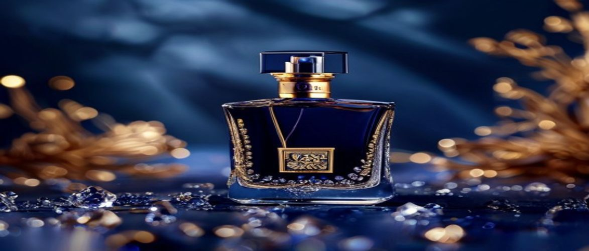

Haute Parfumerie Review
Embark on an exquisite olfactory journey as we delve into the opulent world of the House of Sillage Hauts Bijoux collection, a pinnacle of luxury perfumery that marries haute joaillerie with exceptional fragrance. If you seek to elevate your personal scent signature beyond the ordinary, understanding this collection is paramount.
This exclusive line from House of Sillage represents more than just perfumes; it embodies wearable art, crafted for connoisseurs who appreciate unparalleled craftsmanship and rare aromatic compositions. Each bottle is a testament to meticulous design, promising an experience that transcends mere scent application.
The House of Sillage Hauts Bijoux collection stands as a testament to the brand's dedication to creating a truly luxury fragrance collection, distinguishable by its unique characteristics and profound impact. These fragrances are not merely scents; they are statements of elegance and refined taste.
The House of Sillage Hauts Bijoux collection is ideally suited for the discerning individual who values luxury, artistry, and exclusivity in their personal fragrance. If you are a collector of fine perfumes, appreciate intricate craftsmanship, or seek a signature scent that exudes sophistication and rarity, this collection is designed for you.
It appeals to those who view fragrance as an extension of their personal style, a statement of elegance rather than just a casual accessory. Furthermore, individuals looking for exceptional longevity and a unique olfactory profile will find these fragrances particularly rewarding.
The true artistry behind the House of Sillage Hauts Bijoux lies in its intricate fragrance notes and the masterful craftsmanship that brings them to life, creating an unforgettable olfactory profile. Each scent is a symphony of carefully selected essences, designed to evoke emotion and memory.
| Ingredient / Feature | Scent Role |
|---|---|
| Bulgarian Rose | Provides a rich, velvety floral heart, embodying classic romance and luxury. |
| Madagascar Vanilla | Offers a creamy, sweet, and comforting base, adding warmth and depth to the dry down. |
| Amber | Contributes a warm, resinous, and slightly sweet balsamic aroma, enhancing longevity and sillage. |
| Sandalwood | Delivers a smooth, creamy, and woody foundation, providing elegance and sophistication. |
Bulgarian Rose is a cornerstone of haute parfumerie, renowned for its multifaceted aroma that ranges from intensely floral and honeyed to subtly spicy and green. It forms the opulent heart of many House of Sillage Hauts Bijoux fragrances, providing a timeless elegance and profound emotional depth.
This precious essence is crucial for creating a luxurious floral bouquet, offering both exceptional richness and delicate nuance. Its presence ensures a sophisticated and universally appealing core to the fragrance.
The extraction of Bulgarian Rose oil is a labor-intensive process, requiring approximately 10,000 pounds of rose petals to produce just one pound of oil, making it one of the most expensive and prized natural ingredients in perfumery.
Madagascar Vanilla brings a creamy, warm, and inviting sweetness to the fragrance, acting as a comforting anchor in the base notes. Its rich, gourmand facets enhance the overall luxuriousness and contribute significantly to the scent's longevity and smooth dry down.
This ingredient adds a sensual and addictive quality, balancing the floral and resinous elements with its comforting embrace. It is vital for creating a lasting impression and a beautiful skin scent.
To fully appreciate the intricate beauty and enduring sillage of your House of Sillage Hauts Bijoux fragrance, proper application is key. Following these steps will ensure you maximize its luxurious impact and longevity.
When indulging in a luxury fragrance like House of Sillage Hauts Bijoux, certain habits can diminish its intended effect and longevity. Avoid over-spraying, as the potent concentration of an eau de parfum means a little goes a long way and too much can be overwhelming.
Furthermore, do not store your precious perfume in the bathroom, where humidity and fluctuating temperatures can degrade the scent composition over time. Always treat your fragrance with the care it deserves.
Always perform a patch test on a small area of skin if you have known sensitivities to fragrances or new products.
The House of Sillage Hauts Bijoux collection is characterized by its fusion of haute parfumerie with haute joaillerie, featuring fragrances housed in exquisitely designed, often crystal-adorned bottles. Each scent is crafted with rare ingredients, offering unique olfactory profiles and exceptional longevity, making them both a luxury fragrance and a collector's item.
House of Sillage Hauts Bijoux fragrances are typically concentrated as an eau de parfum, meaning they contain a higher percentage of pure fragrance oils compared to eau de toilette. This higher concentration, combined with the use of high-quality base notes like amber and vanilla, ensures remarkable longevity and a noticeable sillage that gracefully emanates from the wearer.
For enthusiasts of niche perfumery and luxury goods, House of Sillage Hauts Bijoux is often considered a worthwhile investment. The combination of artistic bottle design, rare ingredients, unique olfactory profiles, and exceptional performance justifies its premium price point, offering a truly elevated and exclusive fragrance experience.
While designed for luxury, House of Sillage Hauts Bijoux fragrances can certainly be worn daily, depending on your personal preference and the specific scent profile. Their sophisticated nature makes them suitable for both special occasions and as an everyday signature scent for those who appreciate constant elegance and a strong personal fragrance statement.
The House of Sillage Hauts Bijoux collection undeniably occupies a unique space in the world of luxury perfumery, offering an experience that transcends mere scent. With its breathtaking bottle artistry, rare ingredient compositions, and impressive performance, it stands as a testament to unparalleled craftsmanship and olfactory excellence.
If you are a connoisseur seeking a fragrance that is both a personal indulgence and a collectible work of art, investing in the House of Sillage Hauts Bijoux is a decision you will cherish. Elevate your fragrance wardrobe and make a statement of sophisticated luxury today.
Have questions or a comment on the post? Send us a message and we will get back to you soon.